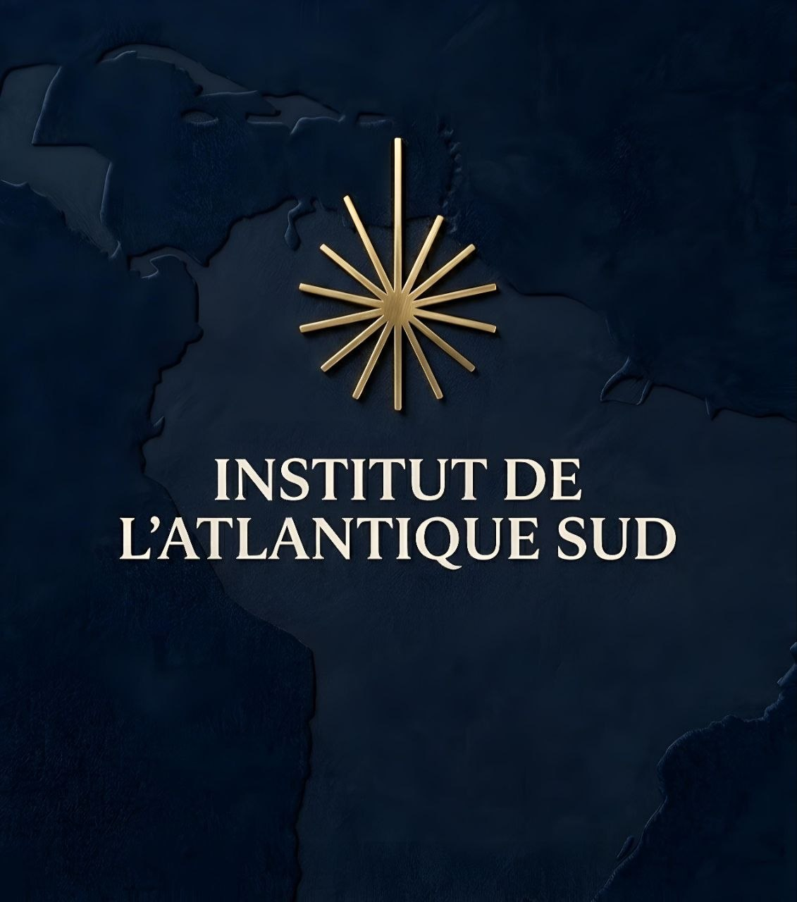
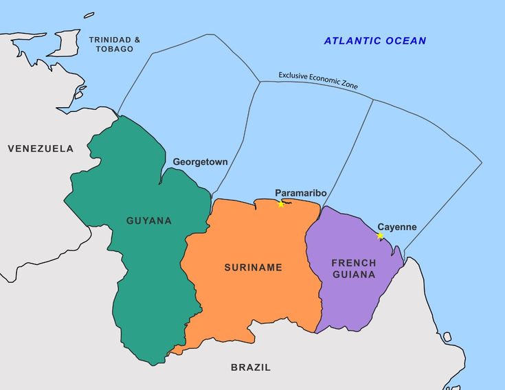
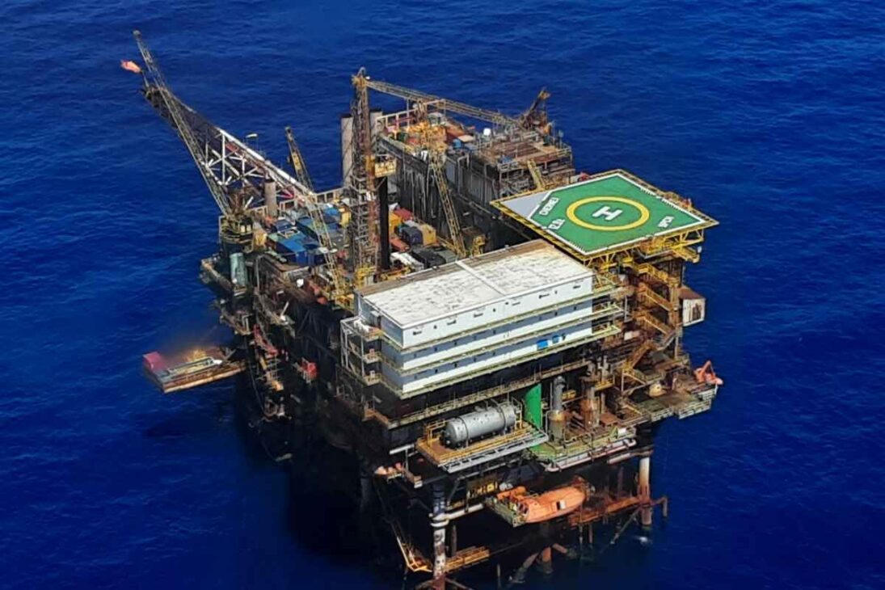

FOUNDING LEADERSHIP
The Founding Team
Three complementary profiles serving a shared strategic vision for the South Atlantic.

For sovereignty, geoeconomics and strategic cooperation in the South Atlantic.
The Blue Guyane and the Blue Amazon form a unique strategic window in the 21st century.
Europe depends on China for 97% of its magnesium, 71% of its gallium and 90-98% of its rare earths.
Together, Blue Guyane and Blue Amazon can become the lever for European and Brazilian sovereignty in critical minerals, offshore energy and maritime security.

An independent think tank serving a shared strategic vision between Europe and South America.
Transform hybrid vulnerabilities into opportunities for shared power between France and Brazil.
Position Blue Guyane as a strategic maritime hub for France and Europe in the South Atlantic, in partnership with the Blue Amazon.
The Manifesto “Blue Guyane, Blue Amazon” establishes the strategic doctrine of the Institut Atlantique Sud for the shared space between France and Brazil in the South Atlantic.
Download the Founding Manifesto (PDF)This is the document that founds our vision.
The only European Union territory in South America, French Guiana has an Exclusive Economic Zone (EEZ) of 350,000 km².
Beyond current hybrid threats, Blue Guyana offers exceptional potential in:
The objective: move from a defensive posture to a proactive sovereignty strategy, leveraging this unique territory for Europe and the Franco-Brazilian partnership.

A Brazilian maritime territory of 5.7 million km² (67% of the continental territory), the Blue Amazon concentrates the essential economic and energy power of Brazil in the 21st century:
Critical mineral resources in the depths of the South Atlantic, particularly on the Rio Grande Rise — one of the world's most important provinces of polymetallic nodules and ferromanganese crusts.

France and Brazil already share concrete operational cooperation:
The Institute proposes to go further toward a true shared power strategy :
Europe is in a situation of extreme strategic dependence on China:
Blue Guyana (EU territory) and the Blue Amazon represent one of the rare real opportunities for sovereign diversification.
Inspired by the Japanese model of Sanae Takaichi (Chikyu vessel at 6,000 meters), the Institute proposes:
A Franco-Brazilian initiative in an advanced structuring phase to promote a sovereign vision in the South Atlantic.
The Institut Atlantique Sud is an independent initiative dedicated to strategic analysis and the promotion of sovereign cooperation between France, Brazil and the European Union.
Three complementary profiles serving a shared strategic vision for the South Atlantic.
Privileged exchange formats for decision-makers and experts of the South Atlantic.
Intimate, off-the-record dinners bringing together senior government officials, business leaders, diplomats and experts for strategic discussions on the South Atlantic.
Closed-door briefings on sensitive geopolitical, security and geoeconomic issues.
High-level public or semi-public conferences and structured dialogues to advance key themes: critical minerals, maritime security, and Franco-Brazilian cooperation in the South Atlantic.
In-depth analysis of maritime sovereignty, critical minerals and strategic cooperation challenges between France, Brazil and the EU in the South Atlantic.
Comprehensive proposal for a Franco-European sovereign fund dedicated to the sovereign valorization of strategic resources in Blue Guiana. A concrete instrument to end Chinese predation on gold resources, secure European supplies of critical minerals, and build economic power in South America — aligned with the Critical Raw Materials Act (CRMA) and inspired by the Guyana Natural Resource Fund.
Analysis of Japan’s deep-sea mining strategy led by Sanae Takaichi and concrete lessons for Brazilian sovereignty over the Blue Amazon.
This note examines the unprecedented convergence between 2022 and 2026 of the Varin report, the creation of DIAMMS, the mining code reform, and Senate report No. 135 on the Guiana Plateau. It analyzes the structural barriers weakening this window of opportunity and proposes recommendations to secure it.
Analysis focused on the maritime reinvention of Brazilian power, the Equatorial Margin and seabed resources.
For partnership inquiries or information about our work.
We will respond as soon as possible.